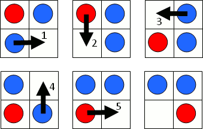

In a sliding game a counter may slide horizontally or vertically into an empty space. The objective of the game is to move the red counter from the top left corner of a grid to the bottom right corner; the space always starts in the bottom right corner. For example, the following sequence of pictures show how the game can be completed in five moves on a $2$ by $2$ grid.

Let $S(m,n)$ represent the minimum number of moves to complete the game on an $m$ by $n$ grid. For example, it can be verified that $S(5,4) = 25$.

There are exactly $5482$ grids for which $S(m,n) = p^2$, where $p \lt 100$ is prime.
How many grids does $S(m,n) = p^2$, where $p \lt 10^6$ is prime?